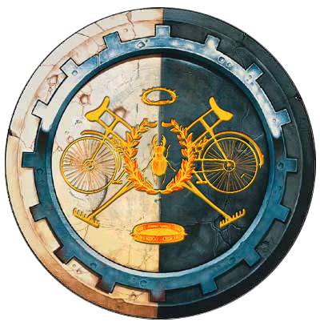
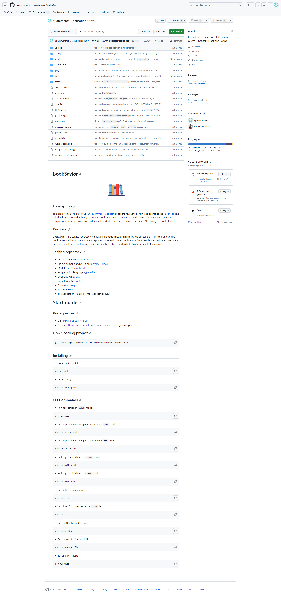
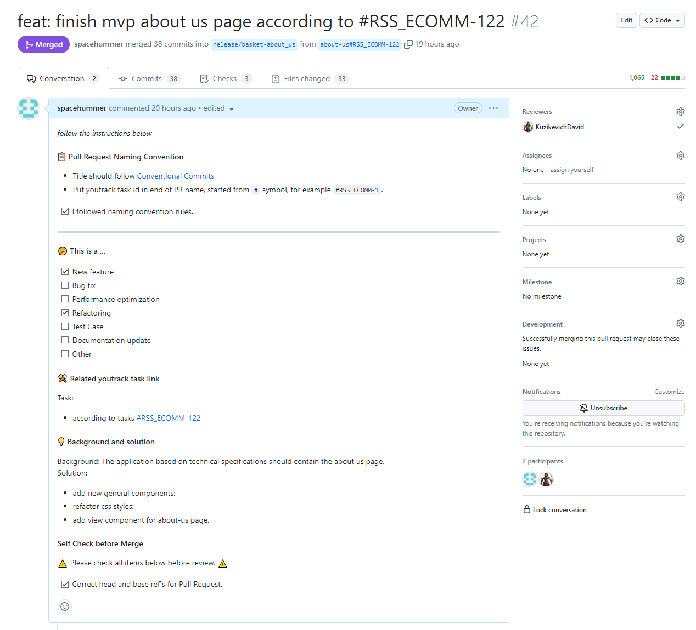
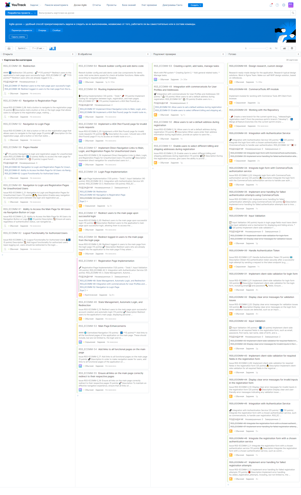
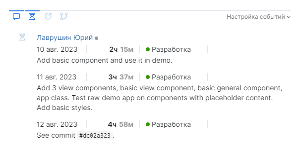
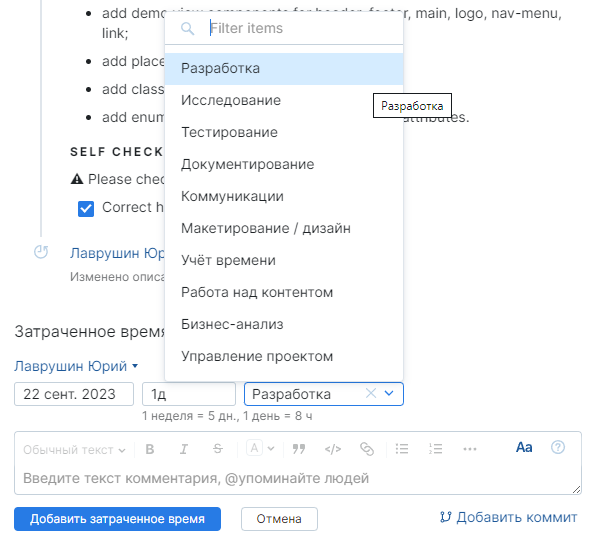
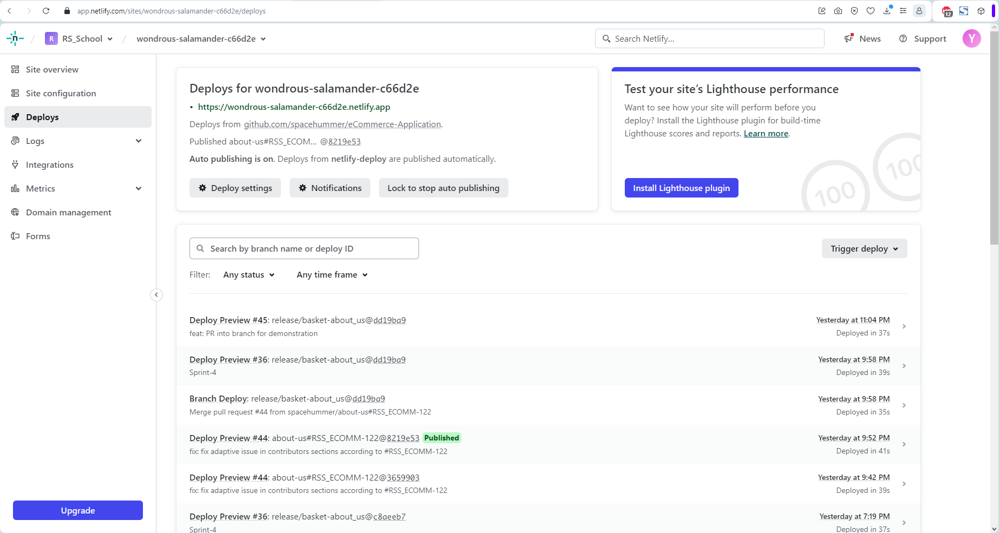

BookSavior
RS School JavaScript/Front-end 2023Q1
финальное задание

команда: Adeptus Mechanicus
Состав команды Adeptus Mechanicus
Юрий: тимлид
Возраст: 28 лет
Образование: прикладная механика
Давид: разработчик
Возраст: 30 лет
Образование: инженер-программист
Организация работы команды
Для в процессе командной разработки использовались:
- система контроля версий: GitHub
- систему управления проектом: YouTrack by JetBrains
- коммуникации: Discord сервер
- деплой: Netlify
GitHub проекта
https://github.com/spacehummer/eCommerce-Application
- для облегчения развёртывания написан README.MD
- разработка велась в ветках, соответствующих задаче
- интеграция в систему контроля версий
- интеграция в Netlify
GitHub проекта
- для внесения изменений в ветки релиза и разработки использовались PR
- для стандартизации PR для PR был написан шаблон
- у имён веток и PR был нейминг в соответствии с интеграцией в YouTrack
- каждый PR проходил ревью команды
Главная страница репозитория

Пример заполненного по шаблону PR

YouTrack
- процесс разработки был разбит на спринты
- в результате декомпозиции ТЗ были созданы задачи и подзадачи
- между задачами использованы связи родитель-потомок, 'связана с', 'обязательно для'
- задачам были выставлены приоритеты
YouTrack
- на доске Agile были созданы столбцы по состояниям: 'Открыта', 'В обработке', 'Подлежит проверке', 'Готово'
- для управления временем, затраченным на задачу, настроена возможность внесения времени с указанием типа работы
- интеграция с GitHub позволяла чётко связать задачу с веткой/коммитом/PR
Промежуточное состояние доски спринта 2

Управление временем
внесённое в задачу время

Управление временем
настроенные типы работы

Netlify: управление деплоями

Стек технологий
- CommerceTools
- TypeScript
- Webpack
- ESLint
- Prettier
- Husky
- Jest